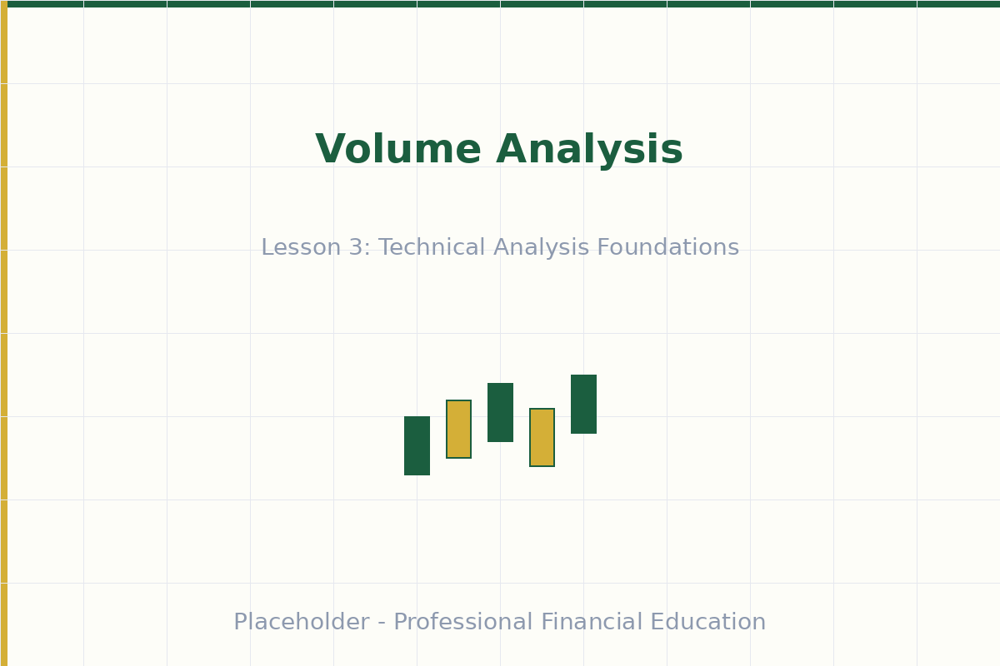
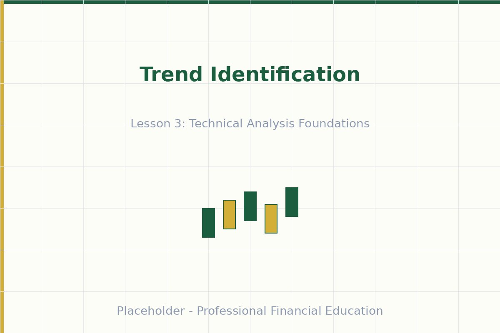

أساسيات التحليل الفني
تعلم قراءة الرسوم البيانية وتحديد الأنماط التي تتنبأ بحركات الأسعار
الفيديو قيد الإعداد
المدة: دقيقتان | الجودة: 1080p
أهداف التعلم
- فهم مبادئ التحليل الفني وكيفية عمل الرسوم البيانية للأسعار
- التعرف على تشكيلات الشموع اليابانية وتفسير الأطر الزمنية للرسوم البيانية
- تحديد مستويات الدعم والمقاومة وأهميتها في التداول
- تحليل بيانات الحجم للتأكيد على حركات الأسعار ومعنويات السوق
يشكل التحليل الفني العمود الفقري لمعظم استراتيجيات التداول قصيرة الأجل. يركز هذا النهج التحليلي على دراسة الرسوم البيانية للأسعار والأنماط والسلوك السوقي للتنبؤ بالحركات المستقبلية.
فهم أنواع الرسوم البيانية والشموع اليابانية
تعتبر الرسوم البيانية الأدوات الأساسية للتحليل الفني، وتعرض حركات الأسعار على فترات زمنية مختلفة. تشمل الأنواع الأكثر شيوعاً الرسوم البيانية الخطية والرسوم البيانية العمودية والشموع اليابانية.

مستويات الدعم والمقاومة
تمثل مستويات الدعم والمقاومة المناطق الرئيسية حيث يظهر اهتمام الشراء أو البيع في السوق. مستويات الدعم هي الأسعار حيث يمنع اهتمام الشراء الانخفاض الإضافي - بشكل أساسي حد أدنى حيث يتدخل المشترون.

تحليل الحجم وتأكيد السوق
يمثل الحجم عدد الأسهم أو العقود المتداولة خلال فترة محددة. يساعد تحليل الحجم على تأكيد حركات الأسعار وتحديد الانعكاسات المحتملة في السوق. المبدأ بسيط: حركات الأسعار المصحوبة بحجم مرتفع تعتبر أكثر أهمية وموثوقية من تلك التي على حجم منخفض.
تحليل الاتجاه واتجاه السوق
تمثل الاتجاهات الاتجاه العام لحركة الأسعار بمرور الوقت وهي أساسية لفلسفة التحليل الفني. يتميز الاتجاه الصعودي بقمم أعلى وقيعان أعلى، مما يشير إلى ضغط شراء مستمر وقوة السوق.
اختبر معلوماتك
⚡ +50 XPالنقاط الرئيسية
- يستخدم التحليل الفني الرسوم البيانية والأنماط للتنبؤ بالحركات المستقبلية وتحديد فرص التداول
- توفر الشموع اليابانية معلومات سعرية شاملة تظهر الافتتاح والإغلاق والأعلى والأدنى لكل فترة
- تساعد مستويات الدعم والمقاومة على تحديد مناطق الأسعار الرئيسية حيث من المرجح حدوث انعكاسات أو اختراقات
- يؤكد الحجم على حركات الأسعار - الحجم المرتفع يجعل حركات الأسعار أكثر أهمية وموثوقية
- يساعد تحليل الاتجاه المتداولين على مواءمة صفقاتهم مع اتجاه السوق السائد لنجاح احتمالي أعلى
تمرين عملي
اختر سهماً أو زوج عملات وحدد ثلاثة مستويات دعم وثلاثة مستويات مقاومة على الرسم البياني اليومي. ضع علامة على هذه المستويات بوضوح لاحظ كيف تتفاعل الأسعار عندما تقترب من هذه المناطق على مدار الأسبوع التالي.